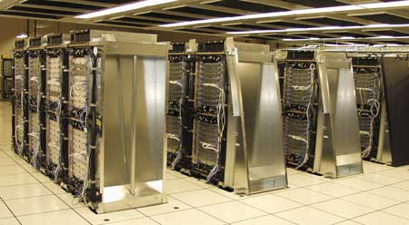

В конце прошлого года на конференции Supercomputing 2005 в Сиэтле в очередной, уже двадцать шестой, раз был представлен Top500 (http://www.top500.org) - список 500 самых быстродействующих суперкомпьютеров мира. Список ранжирует компьютеры по их способности выполнять тест Linpack, где измеряется главным образом скорость, с которой компьютер выполняет большой объем вычислений с плавающей запятой. Этот тест неидеально оценивает производительность, но оказался удобным инструментом для ранжирования суперкомпьютеров.
Надо отметить, что список Top500 по-прежнему очень динамичен. Четыре из десяти самых мощных систем вытеснены из него новыми компьютерами, а 221 машине из июньского списка не хватило сил, чтобы попасть в новый. Столь быстрое замещение отчасти вызвано созданием суперкомпьютеров из объединенных в кластеры серверов. В прошлом многие суперкомпьютеры составляли одно органичное целое, а теперь 72% машин из списка - это кластеры, хотя в нижней его части их больше. Для сравнения: в 25-м списке кластеры составляли всего 61%. Что касается процессоров, то те из них, что популярны в серверах, работают сегодня и в суперкомпьютерах. В 206 системах из списка используются 32-разрядные процессоры Intel х86. На втором месте 64-разрядная версия тех же процессоров (EMT) - она применяется в 81 машине. Все типы процессоров POWER тоже фигурируют в 81 компьютере. Процессоры AMD Opteron потихоньку вытесняют Itanium. Они используются в 55 машинах из списка (вместо 25 в 25-м списке), в то время как число компьютеров с процессорами Intel Itanium уменьшилось с 79 до 46 систем. Самым большим потребителем суперкомпьютеров остается индустрия: 226 машин из списка принадлежат коммерческим организациям, 121 - научно-исследовательским и 70 - академическим. Самый популярный способ соединения - Gigabit Ethernet, его используют 249 компьютеров из списка, а вот в 101 системе применяется Myrinet.
Результатами нового списка могут быть особенно довольны федеральные власти США. Всего пару лет назад они били тревогу по поводу конкурентоспособности своей супердержавы в области суперкомпьютеров. Похоже, что опасения оказались преувеличенными. Так, 305 машин из нового списка суперкомпьютеров Top500 установлены в США - против 277 в прошлом списке. Между тем число машин из 26-го списка, находящихся в Европе, Китае и Японии, уменьшилось. Добавим еще, что 34 из 35 самых мощных компьютеров созданы американскими производителями или университетами, и 479 компьютеров имеют североамериканское происхождение.
Лидером в области суперкомпьютеров остается IBM. У "Голубого гиганта" пять из десяти самых мощных суперкомпьютеров, причем три из них возглавляют список Top500. В целом из 500 компьютеров IBM создала 43,8%. Ее Blue Gene/L, который еще в ноябре 2004 г. вытеснил с первого места NEC Earth Simulator, третий раз подряд стал самым мощным суперкомпьютером в мире. Установленный в Национальной лаборатории им. Лоуренса в Ливерморе, он за последние шесть месяцев удвоил свой размер и теперь содержит 131 076 процессоров, причем наращивание продолжается. По результатам тестов Linpack быстродействие данной системы составляло 280,6 TFLOPS.
Вторую позицию в списке занимает Watson Blue Gene eServer с производительностью 91,3 TFLOPS, тоже принадлежащая IBM. Эту машину корпорация установила в июне в своем Исследовательском центре имени Томаса Дж. Уотсона. Третье место впервые получила система ASC Purple, созданная корпорацией IBM на основе ее серверов pSeries 575. Эта система, также находящаяся в Национальной лаборатории им. Лоуренса, имеет производительность 63,4 TFLOPS. Еще одной системе IBM принадлежит восьмая позиция - это самый быстродействующий в Европе компьютер MareNostrum, установленный в Суперкомпьютерном центре в Барселоне (Испания). MareNostrum обладает производительностью 27,9 TFLOPS. Девятое место занимает eServer Blue Gene корпорации IBM, названный Astron и установленный в университете Гронингена в Голландии, с производительностью 27,4 TFLOPS.
Лидер супекомпьютеров - Blue Gene/L
Впервые Gene/L возглавил список суперкомпьютеров Top500, продемонстрировав производительность в 70,7 TFLOPS. Эта система, разработанная при участии одного из основных партнеров IBM, Национального агентства ядерной безопасности Министерства энергетики США, развертывается в Ливерморской национальной лаборатории в Калифорнии. По мнению разработчиков, архитектура Blue Gene позволяет решать многие задачи с колоссальной скоростью - в десять раз быстрее, чем ранее. Так, по завершении построения системы Национальное агентство ядерной безопасности (NNSA) будет иметь в своем распоряжении инструмент, позволяющий оперативно решать неотложные проблемы старения арсеналов ядерного оружия. Кроме того, эта система позволит расширить круг математических моделей, применяемых при сертификации арсеналов.
Супермашина с 65 536 процессорами способна выполнять 280,6 трлн операций в секунду (280,6 TFLOPS). Эта цифра - верхний предел прогнозировавшегося IBM диапазона и более чем вдвое превышает предыдущий рекорд Blue Gene/L в 136,8 TFLOPS, установленный после монтажа первой половины компьютера. В отличие от других суперкомпьютеров IBM, Blue Gene/L потребляет меньше энергии, а вместо массивного и сложного центрального коммутатора для связи между процессорами использует пять отдельных сетей. Когда Blue Gene/L исполняет тест Linpack, все его процессоры заняты математическими вычислениями. Но во многих задачах половина процессоров системы используется для управления сетью. По имеющейся информации, IBM продает машины Blue Gene примерно по 2 млн долл. за 1024-процессорную стойку.
Создание Blue Gene началось как исследовательский проект внутри IBM для имитации фундаментальных биохимических процессов в белках. После того как в ноябре 2004 г. IBM объявила о начале масштабных поставок решения IBM eServer Blue Gene Solution - коммерческой версии системы, разработанной в рамках исследовательского проекта корпорации, в 25-й список Top500 вошло рекордное количество систем Blue Gene - 16. Решение IBM eServer Blue Gene, основанное на архитектуре IBM Power, оптимизировано с точки зрения пропускной способности, масштабируемости и возможностей обработки больших объемов данных и при этом требует значительно меньше энергии и площадей, чем другие ведущие суперкомпьютерные системы. IBM и партнеры корпорации постоянно пополняют список высокопроизводительных вычислительных приложений для eServer Blue Gene в таких областях, как медико-биологические науки, финансовое моделирование, гидродинамика, квантовая химия, молекулярная динамика, астрономия и космические исследования, моделирование климатических процессов. Ядерное оружие также остается областью активных исследований, поскольку Министерство обороны США пытается обеспечить его надежность без проведения реальных испытаний.
В Бостонском университете система IBM Blue Gene будет использоваться для решения сложнейших научных проблем в диапазоне от субъядерной физики, генетики и клеточной биологии до моделирования космической "погоды" и океанических систем. В частности, в университете с помощью системы Blue Gene ведутся исследования в области квантовой хромодинамики - теории, описывающей загадочные силы, которые удерживают кварки внутри ядерных частиц, и имеющей ключевое значение для понимания процессов, происходящих при столкновении высокоэнергетических частиц в ускорителях. Другое направление исследований, в котором будет применяться Blue Gene, - прогнозирование космической "погоды", т. е. воздействия процессов на поверхности Солнца (в частности, солнечных вспышек) на радиационный пояс, верхние слои атмосферы и ионосферу Земли. Результатами этого воздействия могут быть нарушения радиосвязи, помехи в электрораспределительных сетях, сбои глобальных навигационных систем.
Наряду с Ливерморской национальной лабораторией в быстро растущую систему организаций, применяющих суперкомпьютеры Blue Gene в научных исследованиях, входят Нидерландский фонд астрономических исследований (ASTRON), японский Институт перспективных научных и технологических исследований (AIST), компания NIWS (Япония), Национальный центр атмосферных исследований США (NCAR), Эдинбургский университет, Суперкомпьютерный центр в Сан-Диего, Аргоннская национальная лаборатория, Федеральный политехнический институт в Лозанне (EPFL) и центр IBM Deep Computing Capacity on Demand.
|  | Суперкомпьютер Blue Gene.
|
Blue Gene "по требованию"
Уже весной прошлого года IBM объявила о готовности самого мощного суперкомпьютера Blue Gene, расположенного в центре высокопроизводительных вычислений "по требованию" IBM (Deep Computing Capacity on Demand Center) в Рочестере (шт. Миннесота). Новый центр впервые в истории предоставил заказчикам и партнерам IBM дистанционный доступ к системе Blue Gene через выделенную сеть VPN с высокой степенью защиты, причем пользователь оплачивает только заказанные им системные ресурсы.
Хотя некоторые из наиболее амбициозных суперкомпьютерных проектов по-прежнему ведутся в государственных исследовательских лабораториях, тем не менее быстро растут потенциальные возможности для коммерческого применения высокопроизводительных вычислений в новых областях, таких, как создание новых лекарств и проектирование продукции, моделирование и анимация, финансовые расчеты и прогнозирование погоды. Высокопроизводительные вычисления по требованию позволят также удовлетворить потребности многочисленных заказчиков из различных сегментов рынка, бюджеты которых до сих пор не позволяли эффективно использовать суперкомпьютерные ресурсы.
Решение IBM eServer Blue Gene позволяет заказчикам улучшить эффективность своих научных разработок или бизнеса за счет беспрецедентной скорости и высокомасштабируемой производительности. Это решение обеспечивает пиковую производительность в 5,7 TFLOPS с помощью системы, размещенной в одной полномасштабной стойке и оптимизированной по плотности вычислительной мощности, по уровню энергопотребления и масштабируемости.
IBM совместно со своими бизнес-партнерами работает над применением системы Blue Gene в различных областях. Многие национальные лаборатории и университеты все чаще прибегают к ресурсоемким вычислительным приложениям в таких областях, как биологические науки, гидродинамика, квантовая химия, динамика молекул, астрономия и космические исследования, моделирование климата и т. д. Кроме того, для ресурсоемких приложений существуют такие области применения, как финансовое моделирование, бизнес-аналитика, управление рисками и обеспечение соответствия законодательным требованиям, аэродинамические исследования и испытания, производственные процессы.
Многие ведущие поставщики программных продуктов, такие как Novell, LSTC и Allinea, проявили интерес к оптимизации своих приложений для системы Blue Gene. Компания Etnus уже занимается процессом адаптации к ней своего параллельного отладчика TotalView.
Другие центры IBM, расположенные в США (Поукипси, шт. Нью-Йорк, и Хьюстон, шт. Техас) и во Франции (Монпелье), предоставляют заказчикам всего мира доступ к своим ресурсам с помощью безопасного VPN-соединения через Интернет. Заказчики имеют доступ по требованию к вычислительным ресурсам систем, которые включают в общей сложности более 5200 процессоров Intel, AMD Opteron и POWER, функционирующих под управлением ОС Linux, Microsoft Windows и IBM AIX. Новый центр в Рочестере располагает системой Blue Gene на базе более 2 тыс. процессоров IBM PowerPC, ориентированной на выполнение рабочих нагрузок Linux. Доступ к масштабируемым защищенным системам в центрах высокопроизводительных вычислений по требованию можно получить из любого региона мира.
Концепция высокопроизводительных вычислений по требованию корпорации IBM позволяет заказчикам:
- быстро и в любое время получить вычислительные ресурсы, адекватные имеющимся бизнес-потребностям;
- иметь в своем распоряжении огромную вычислительную мощность для обеспечения конкурентного преимущества;
- избежать крупных капиталовложений в ИТ-ресурсы и долговременных постоянных расходов, включая расходы на модернизацию центров обработки данных, или, по крайней мере, отсрочить их;
- улучшить соотношение цена/производительность для ресурсоемких вычислительных приложений;
- использовать в своих интересах ресурсы IBM, переложив на корпорацию ответственность за владение техническими средствами и за управление ими.
Такое сочетание высокой производительности и небольших размеров, стоимости и затрат на энергопотребление сделало суперкомпьютерные технологии гораздо более доступными и позволило значительно расширить перечень решаемых с их помощью задач. В результате IBM теперь может предложить эту технологию своим заказчикам на коммерческой основе.
Один из заказчиков службы Deep Computing Capacity on Demand Center - компания SmartOps, которая помогает управлять имуществом и дистрибуцией таким фирмам, как Caterpillar и Cardinal Health. Другой заказчик, QuantumBio, планирует продавать машинное время фармацевтическим компаниям для моделирования лекарств и решения других вычислительных задач.
Blue Gene: цифровая модель мозга
В июне 2005 г. корпорация IBM и Федеральный политехнический институт в Лозанне (Ecole Polytechnique Federale de Lausanne, EPFL) представили крупномасштабную совместную исследовательскую инициативу под условным названием Blue Brain Project, призванную поднять на новый уровень исследования мозга. В течение следующих двух лет ученые обеих организаций, используя вычислительные мощности суперкомпьютера IBM eServer Blue Gene, будут совместно создавать детальную модель нейронной структуры неокортекса, самой большой и сложной части коры головного мозга человека. Постепенно включая в проект моделирование других частей мозга, ученые в конечном счете надеются построить точную компьютерную модель мозга в целом.
Человечество по сути не слишком много знает о том, как работает мозг. С помощью новой модели ученые смогут провести компьютерное моделирование работы мозга на молекулярном уровне, чтобы выяснить, как устроены такие внутренние процессы, как мышление, понимание и память. Ученые также надеются лучше понять, как и почему в мозгу происходят сбои определенных микроцепей, являющиеся причиной таких психических расстройств, как аутизм, шизофрения и депрессия.
Моделирование мозга на клеточном уровне - это сложнейшая задача, требующая учета сотен тысяч параметров. Соединяя ресурсы и опыт, IBM и EPFL приступают к одной из самых амбициозных исследовательских инициатив в истории нейробиологии. Исследователи IBM планируют, используя уже имеющийся у них опыт моделирования сложных биологических систем, построить действующую трехмерную модель, воссоздающую высокоскоростные внутримозговые электрохимические взаимодействия. Система, работающая на четырех стойках Blue Gene, обеспечит трехмерное моделирование происходящих в мозгу процессов с недостижимой до сих пор точностью.
По мнению экспертов, важна даже не сама по себе чистая производительность, а ее применение для ускорения инноваций и открытий в науке, технике и бизнесе. Значительно превосходя по быстродействию другие существующие в мире суперкомпьютерные системы, Blue Gene предоставляет ученым беспрецедентные вычислительные возможности.
Как ожидается, применение суперкомпьютера Blue Gene для проведения экспериментов в реальном времени позволит существенно ускорить темпы исследований мозга. При наличии точной компьютерной модели значительную часть предварительных проверок и работ по планированию, которые обычно требуются для крупного эксперимента, можно проводить "в цифровом виде", а не в лаборатории. В некоторых случаях, по сделанным оценкам, Blue Gene позволит за несколько секунд выполнить работу, которая в лаборатории потребовала бы целого дня.
На первом этапе проекта планируется построить программную модель одной колонки - элементарного модуля неокортекса. Неокортекс составляет около 85% общей массы головного мозга человека. Именно его считают ответственным за когнитивные функции - язык, память, обучение и сложное мышление. Точная модель колонки неокортекса - это необходимый первый шаг к моделированию мозга в целом и "мостик", связывающий генетический, молекулярный и когнитивный уровни функционирования мозга. На втором и последующих этапах планируется расширить модель, включив в нее цепи из других участков мозга, а в конечном счете - мозг в целом.
Суперкомпьютерная система для EPFL сравнима по размерам с четырьмя бытовыми холодильниками и обладает пиковой вычислительной производительностью не менее 22,8 TFLOPS.
В соответствии с соглашением, заключенным с IBM, часть времени Blue Gene будет выделяться на другие перспективные исследовательские проекты. В рамках одного из таких проектов исследователи Цюрихской лаборатории IBM вместе с учеными из институтов физики сложных материалов и наноструктурной физики EPFL будут заниматься исследованиями будущих полупроводниковых технологий, которые должны прийти на смену КМОП, обеспечив дальнейшее уменьшение размеров полупроводниковых компонентов и процессоров, - в частности, углеродных нанотрубок.
Другая группа исследователей EPFL с помощью Blue Gene будет изучать возможности плазменных технологий получения энергии. Еще одна группа будет использовать Blue Gene для исследования конформаций белковых молекул и их роли в развитии болезни Крейцфельда - Якоба (коровьего бешенства) и других заболеваний.
Blue Gene: исследования климата и погоды
Национальный центр атмосферных исследований США (NCAR) в сотрудничестве с университетом Колорадо приобрел суперкомпьютер IBM Blue Gene, который планируется использовать для имитационного моделирования океанических, погодных и климатических явлений, оказывающих влияние на сельскохозяйственное производство, цены на топливо коммунально-бытового назначения и глобальное потепление. Суперкомпьютер IBM eServer Blue Gene имеет пиковую производительность 5,7 TFLOPS и размещается в одной полномасштабной стойке. Площадь основания этой системы составляет менее 1 м2, но при этом она более чем в десять раз превышает по производительности многие имеющиеся сегодня на рынке суперкомпьютеры, занимая меньшее полезное пространство вычислительного центра. Национальный научный фонд США, генеральный спонсор центра NCAR, выделил финансовые средства на приобретение 1024 вычислительных узлов Blue Gene.
Ученые отмечают, что исследования климатических изменений относятся к областям науки, имеющим большое политическое значение, потому и потребовались более мощные компьютеры для обработки сложных геофизических моделей. Прогнозирование погоды, предсказание перемещений токсичных загрязнений и "космическая погода" - вот примеры других научных направлений, для работы в которых необходимы более быстрые и эффективные суперкомпьютеры, такие, как Blue Gene.
Корпорация IBM и центр NCAR сотрудничают в области применения суперкомпьютерных ресурсов для решения наиболее требовательных к ресурсам задач моделирования климата уже более пяти лет. Обе стороны полагают, что информация, собранная в процессе использования системы Blue Gene, позволит усовершенствовать методы геофизического моделирования и поможет при разработке будущих суперкомпьютеров IBM. Кроме того, суперкомпьютер Blue Gene центра NCAR ускорит фундаментальные исследования в таких важнейших областях, как глобальные изменения климата, прогнозирование погоды, изучение лесных пожаров, атмосферной турбулентности и т. д.
Моделирование автомобильных аварийVolvo Car Corporation выбрала IBM в качестве поставщика для построения мощного суперкомпьютера, предназначенного для проведения важнейших модельных расчетов автомобильных аварий. IBM предоставляет как оборудование, так и услуги для реализации концепции "безопасного проектирования", которой придерживается этот автомобильный концерн. В новой системе предусмотрено более 150 серверов IBM eServer 325 с процессорами AMD Opteron. В сочетании с уже установленной в Volvo платформой высокопроизводительных вычислений на базе систем eServer xSeries 335 и eServer pSeries 655 она должна образовать один из самых быстродействующих в автомобильной отрасли Linux-кластеров, который станет основой для проведения ключевых модельных расчетов при проектировании автомобилей. Эта новая инфраструктура позволит инженерам компании во всем мире продолжать совместную работу по поддержанию высоких стандартов безопасности. Как известно, еще в 2002 г. Volvo Car Corporation представила первый в автомобильной отрасли Linux-кластер на базе технологий IBM. Новая среда высокопроизводительных вычислений поможет автомобильному гиганту совершенствовать конструкции автомобилей и вести новые разработки.
|
Суперкомпьютер ASC Purple
Система ASC Purple появилась на свет в результате длительного сотрудничества корпорации IBM с Национальным агентством ядерной безопасности (NNSA) Министерства энергетики США (DOE) в рамках программы расширенного моделирования и компьютерной обработки ASC. Ведущей лабораторией по этой программе выступает Ливерморская национальная лаборатория им. Лоуренса, где новый суперкомпьютер и установлен в недавно построенном комплексе Terascale Simulation Facility (TSF). Согласно условиям контракта на создание ASC Purple, объявленным Министерством энергетики США в 2002 г., практическая демонстрация этой системы была намечена на конец июня 2005 г. Система в намеченные сроки прошла демонстрационные испытания, в ходе которых показатели ее производительности существенно превзошли проектные.
| Terascale Simulation Facility - дом для ASC Purple.
|
Представители Ливерморской лаборатории сообщили, что система ASC Purple будет выполнять имитационное моделирование поведения ядерного оружия в интересах программы NNSA по обеспечению сохранности, безопасности и надежности ранее изготовленных средств ядерного сдерживания США без проведения подземных натурных испытаний (проект Stockpile Stewardship). Первую часть своего имени проект ASC Purple (который сначала назывался ASCI Purple) получил от программы Advanced Simulation and Computing Министерства энергетики; эта программа должна гарантировать, что ядерное оружие США после окончания его расчетного срока службы еще долго будет работоспособно. Purple означает сочетание красного, белого и синего цветов: ASC Purple стал кульминацией серии суперкомпьютеров ASCI Red, White и Blue, построенных для трех национальных лабораторий США - Сандиа, Лос-Аламосской и Ливерморской.
Процессоры POWER5, которых в ASC Purple насчитывается 12 544, сами по себе мощнее, чем специализированный вариант процессора POWER, применяемый в Blue Gene/L. И каждый процессор ASC Purple имеет доступ к большему объему памяти, что позволяет просчитывать более сложные модели. При выполнении демонстрационных рабочих нагрузок система ASC Purple превзошла проектные показатели производительности на 10%. В ходе демонстрационных испытаний два экземпляра приложения Marquee, приложение sPPM (гидродинамика турбулентной среды) и приложение UMT2000 (расчет радиационного переноса энергии методом неструктурированной сетки) выполнялись на крупнейшем в мире кластере из узлов P5-p575. Каждый узел p575 включал восемь процессоров Power5 с тактовой частотой 1,9 ГГц и 32 Гбайт оперативной памяти. Демонстрационная система ASC Purple состояла из 1280 серверов, связанных между собой в двух плоскостях с помощью коммутаторов pSeries High Performance Switch. Кроме того, в рамках программы ASC лаборатория LLNL уже использует часть серверов системы Purple в своей практической деятельности - 250 серверов участвуют в засекреченных работах, а еще 108 серверов - в несекретных.
При проведении демонстрации была поставлена задача достичь уровня производительности, эквивалентного теоретической пиковой производительности 1280-узлового кластера Purple, и при выполнении двух экземпляров приложения Marquee показать в установившемся режиме уровень производительности, составляющий 30% от пикового значения. Требуемый показатель производительности - 101 TFLOPS (77,8 TFLOPS в пиковом режиме плюс 23,2 TFLOPS в установившемся режиме), был превышен: достигнутый уровень производительности составил 111 TFLOPS.
Кроме того, при выполнении теста Linpack на 1185 узлах кластера Purple была достигнута производительность, составившая 84% от пикового значения, или 60,49 TFLOPS (Rmax). Эти показатели позволили системе ASC Purple занять третье место в текущем рейтинге суперкомпьютеров Top500, вслед за двумя системами IBM Blue Gene/L.
Десять лет назад, в начале программы ASC, Ливерморская лаборатория планировала развертывание системы с производительностью уровня 100 TFLOPS. На тот момент сообществу ученых-ядерщиков, отвечавших за проект Stockpile Stewardship, была необходима система именно с такой производительностью. Это обеспечило бы вычислительную мощность начального уровня для полномасштабных и высокоточных расчетов системных и физических характеристик ядерного оружия в рамках предусмотренного проекта. В ходе выполнения программы было развернуто несколько промежуточных систем. Прошедшие испытания системы ASC Purple ознаменовали достижение поставленной в 1995 г. цели. Однако это еще не конец программы ASC: Ливерморская лаборатория заявила, что современные требования программы ASC - это производительность на уровне петафлопс и выше.
В период 2004-2005 гг. программа ASC существенно ускорила деятельность компьютерной отрасли США по достижению рубежа 100 TFLOPS. Существующий контракт с IBM позволил NNSA/ASC достичь этой цели в запланированные сроки. В рамках контракта в Ливерморскую национальную лабораторию было поставлено множество аппаратных ресурсов, важнейшие среди которых - системы Purple и Blue Gene/L. Для достижения производительности на уровне 100 TFLOPS потребовалось десятилетнее сотрудничество между IBM и Министерством энергетики/NNSA, в ходе которого были выполнены три отдельных контракта и поставлено семь систем на базе процессоров Power и PowerPС. В 1996 г. исследователи получили систему Blue-Pacific Initial Delivery с производительностью 136 GFLOPS, за ней в 1997 г. последовала Blue-Pacific Technology Refresh (895 GFLOPS), а в 1998 г. - Blue-Pacific Sustained Stewardship TeraFLOP/s (3,9 TFLOPS). Этот суперкомпьютер превысил требования по производительности на 20% и был развернут на три месяца раньше установленного срока. Платформа ASC White с производительностью 12,3 TFLOPS, поставленная в 2000 г., превысила требования по производительности на 23%.
После этого в 2003 г. была развернута система pEDTV с производительностью 12,3 TFLOPS. И, наконец, поставленные в прошлом году системы Purple и Blue Gene/L увенчали сотрудничество достижением совокупной производительности на уровне 460 TFLOPS. Вообще говоря, ASC Purple предполагалось сдать в эксплуатацию в конце 2004 г., но сроки были перенесены из-за перехода на менее дорогостоящую конструкцию. Blue Gene/L и ASC Purple вместе будут потреблять 10 МВт из общей емкости в 45 МВт, которую может обеспечить для вычислений и охлаждения подстанция Лаборатории терамасштабного моделирования.
Ультракомпактный суперкомпьютерПрошлым летом IBM анонсировала новую систему с высокой плотностью монтажа на базе процессоров POWER5, предназначенную для высокопроизводительных вычислений. Впервые представленный на международной конференции International Supercomputer Conference 2005 16-процессорный кластерный узел IBM eServer p5 575 способен достигать производительности 87,3 GFLOPS. Эта система стала значительным шагом на пути развития мощных, готовых к использованию конструктивных блоков, которые ориентированы на потребности широкого ряда приложений, активно использующих вычислительные ресурсы или память. Ультракомпактная вычислительная система допускает установку до 192 процессоров в одну стойку шириной 24 дюйма и может быть использована для решения современных задач, требующих высокопроизводительных вычислений, в таких областях, как техническое конструирование, разработка лекарственных средств, моделирование и расчет конструкции нефтехранилищ, прогноз погоды. По мнению экспертов, такие системы, объединенные в кластер, способны навсегда изменить традиционный подход к построению, управлению и эксплуатации стоечных серверов для проектов, требующих особо высокой вычислительной мощности. Система на базе двухъядерных процессоров POWER5 со сверхвысокой плотностью монтажа имеет размер 2U и может использоваться в составе комплексов, объединяющих до 12 узлов в одном стоечном конструктиве высотой 42U. Пользователи, таким образом, получат крайне высокую вычислительную мощность при небольшой по размерам и экономически эффективной системе. В системе p5 575 будут использоваться новаторские компоновочные решения, обеспечивающие высокоскоростные соединения между 16 процессорами POWER5. Новые уровни высокопроизводительных вычислений могут также быть достигнуты за счет совместного использования памяти, высокой пропускной способности соединений между узлами и технологий виртуализации и логических разделов. Восьмипроцессорная модель p5 575 будет предпочтительной платформой для работы приложений, интенсивно использующих память, например, приложений крупномасштабного углубленного анализа данных и бизнес-аналитики. Производительность кластерного узла IBM eServer p5 575 с успехом используется Обществом Макса Планка (Max Planck Society) для исследований в области нанотехнологий и защиты окружающей среды. Применение в вычислительном центре Гаршинг 86 узлов p5 575 позволило удвоить вычислительную мощность и достичь скорости вычислений, равной 10 TFLOPS. Кластер из 256 восьмипроцессорных узлов p5 575 развернут также в Ливерморской национальной лаборатории им. Лоуренса, где была достигнута производительность 13,09 TFLOPS. В новой системе поддерживаются ОС AIX 5L V5.2, AIX 5L V5.3, SUSE Linux Enterprise Server 9 for POWER и Red Hat Enterprise Linux AS 3 for POWER - независимо или одновременно (посредством механизма логических разделов). В системе p5 575 планируется использовать двухъядерную реализацию процессора IBM POWER5, в которой каждое ядро имеет 36 Мбайт выделенной кэш-памяти третьего уровня. В системе также предусмотрено два отсека для SCSI-дисководов с горячей заменой, размещенных в задней части корпуса. |
Частный суперкомпьютер
Еще прошлым летом корпорация IBM объявила о вводе в строй самого высокопроизводительного в мире суперкомпьютера, принадлежащего негосударственной организации, - это система Watson Blue Gene (BGW), установленная в исследовательском центре IBM им. Т. Дж. Уотсона в г. Йорктаун-Хайтс (шт. Нью-Йорк). Система, обладающая вычислительной производительностью в 91,29 TFLOPS, вошла в первую тройку суперкомпьютеров мира наряду с аналогичным суперкомпьютером Blue Gene/L, установленным в Ливерморской национальной лаборатории и занимающим сегодня первое место в мире по быстродействию. Суперкомпьютер BGW состоит из 20 стоек размером с бытовой холодильник. Занимая места вдвое меньше, чем сравнимые системы, он имеет втрое большую производительность. В IBM ожидают, что вычислительная мощность новой системы откроет новую эпоху прогресса в целом ряде областей - от технических, включая медико-биологические науки, гидроаэродинамику, материаловедение, квантовую химию, молекулярную динамику, до бизнеса.
Одним из первых применений BGW станет Blue Matter - программная инфраструктура, разрабатываемая в рамках проекта Blue Gene в подразделении IBM Research. Первые результаты применения инфраструктуры Blue Matter для моделирования динамики белков, имеющей большое значение для разработки новых лекарств, были опубликованы в "Журнале Американского химического общества" (JACS) в апреле 2005 г.
IBM также планирует открыть вычислительные ресурсы BGW для академических и отраслевых исследователей в рамках программы Innovative and Novel Computational Impact on Theory and Experiment (INCITE) Министерства энергетики США. Как известно, это министерство расширило программу INCITE, предоставив ряду внешних организаций доступ к системе Blue Gene Аргоннской национальной лаборатории, и IBM намерена присоединиться к этой инициативе, выделив для нее до 5% процессорной мощности BGW. Программа направлена на поддержку широкомасштабных исследовательских проектов с большими требованиями к вычислительным ресурсам и открыта для участия университетов, других исследовательских организаций и отраслевых компаний.
В числе пользователей системы BGW также Центр оптимизации бизнеса (CBO) IBM - новое подразделение консалтинга и разработки ПО, использующее опыт корпорации в математике, отраслевом бизнесе и вычислительной технике для решения доселе неразрешимых проблем компаний-клиентов. В частности, программы высокоточного прогнозирования погоды могут стать частью моделей упреждающего управления для таких разнообразных областей применения, как реагирование на чрезвычайные ситуации, прогнозирование поставок и спроса на коммунальные ресурсы, планирование сельскохозяйственных работ и перевозок. Кроме того, вычислительная производительность BGW открывает возможности для отслеживания и анализа мировых финансовых рынков в целях глобальной оценки и управления рисками.
Сочетание высокой производительности системы Blue Gene с компактностью, невысокой стоимостью и малым энергопотреблением выводит суперкомпьютерные технологии на новый уровень развития, когда они могут стать доступными и применимыми для более широкого круга приложений - в противоположность традиционным суперкомпьютерам прошлого, ценность которых в плане скорости и производительности ограничивалась их высокой стоимостью и большими размерами, из-за чего их могло себе позволить лишь ограниченное число государственных учреждений.